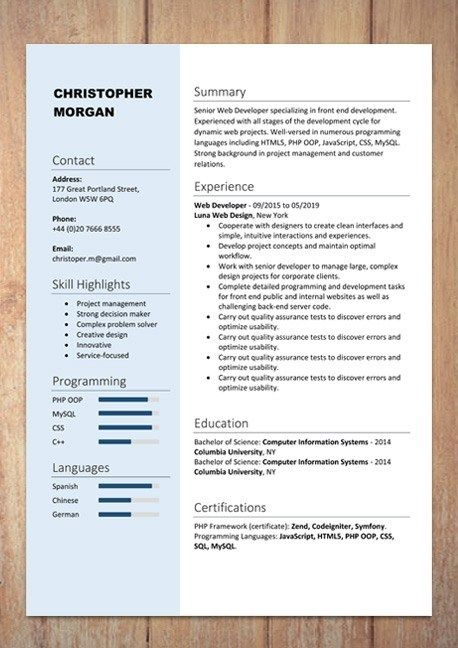

Projects
Resume Builder
This resume website is an online service that helps to create a resume in no time. The web-site will provide variety of resume templates to choose from. One can even customize the resume layout and font size to make resume stand out. Overall, this resume making site will help user to create a resume to his/her liking and it’s easy to use also

Travelopedia
Discover amazing places on our easy-to-use tourism website. Explore Heritage, Temples, and learn about different cultures. Plan your dream vacation effortlessly with helpful guides. Start your journey today and make unforgettable memories.